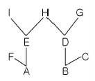
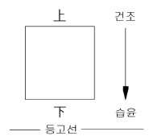

임업종묘기사 (2008-07-27 기출문제)
1과목: 조림학
1. 다음 수종 중 토양의 수분요구도가 가장 높은 수종은?
- 잣나무
- 낙엽송(일본잎갈나무)
- 삼나무
- 소나무
(정답률: 알수없음)

2. 건생식물의 일반적인 형태적 특성으로 틀린 것은?
- 각피층이 얇다.
- 잎의 크기가 작거나, 경엽을 가지고 있다.
- 세포간극이 축소된다.
- 표면에 왁스층이 잘 발달되어 있다.
(정답률: 알수없음)
3. 우리나라 조림 수종 중 도입 수종은?
- 잎갈나무
- 잣나무
- 소나무
- 사방오리나무
(정답률: 알수없음)
4. 밑깎기 작업은 보통 어느 시기에 실시하는가?
- 12 ~ 1월 중
- 3 ~ 4월 중
- 6 ~ 8월 중
- 9 ~ 10월 중
(정답률: 알수없음)
5. 잣나무를 폭 2m, 열 2m 간격으로 5ha를 정방형 조림하고자 할 때 필요한 묘목 본수는?
- 7500본
- 10000본
- 12500본
- 15000본
(정답률: 알수없음)
6. 산림토양이 산성화됨에 따라 나타나는 현상에 대한 설명으로 틀린 것은?
- 수소이온이 뿌리에 흡수되어 단백질이 응고되거나, 효소의 작용을 방해한다.
- 토양용액 중에 활성 알루미늄의 농도가 높아져 묘목 생장에 장애가 된다.
- 토양에서 칼륨, 칼슘, 마그네슘 등의 양이온이 용탈된다.
- 토양의 입단구조가 발달하여 토양미생물의 생육에 유리하게 된다.
(정답률: 알수없음)
7. 발아시험에서 일정 기간내의 발아립수를 시험에 사용한 전체립수에 대한 백분율로 나타낸 것은?
- 순량율
- 발아력
- 효율
- 용적중
(정답률: 알수없음)
8. 제벌작업을 가장 정확하게 설명한 것은?
- 목적 이외의 수종이나 형질이 불량한 임목을 제거하는 것이다.
- 조림 후 임목이 성장하여 밀식된 임목을 벌채하는 것이다.
- 조림 후 병해충의 피해를 받은 임목만 벌채하는 것이다.
- 맹아력이 강한 수종만을 골라 벌채하는 것이다.
(정답률: 알수없음)
9. 갱신의 방법에서 인공조림에 의한 방법이 아닌 것은?
- 파종 조림
- 식수 조림
- 삽목 조림
- 맹아 갱신
(정답률: 알수없음)
10. 큰 수종을 이식할 때 뿌리돌림을 해서 근주 부근에 세근을 발달시키고 뒤에 근분을 떠서 활착을 돕고자 할 때 수종과 뿌리돌림의 시기가 적합하게 짝지어 진 것은?
- 낙엽수종 : 11 ~ 2월 상순, 혹은 2 ~ 3월 상순
- 상록 침엽수종 : 7 ~ 8월 상순
- 상록 활엽수종 : 한겨울
- 수종마다 큰 차이가 없고 년 중 어느 때든지 적합하다.
(정답률: 알수없음)
11. 임지의 잠재생산능력 급수가 V급인 곳에 조림해야 할 수종은?
- 오리나무
- 낙엽송
- 곰솔
- 현사시나무
(정답률: 알수없음)
12. 생가지치기를 하여도 상구 부후의 위험성이 거의 없는 수종으로 짝지어진 것은?
- 자작나무류, 단풍나무류
- 삼나무, 물푸레나무
- 벚나무류, 느릅나무류
- 편백, 포플러류
(정답률: 알수없음)
13. 묘 포지를 경운(밭갈이)작업할 때 나타나는 효과로 맞는 것은?
- 토양내 산소량이 감소한다.
- 토양의 보수력을 감소시킨다.
- 토양의 풍화작용을 촉진시킨다.
- 토양내 탄산가스량은 영향이 없다.
(정답률: 알수없음)
14. 1년생 묘목을 상체하는데 적합하지 않는 수종은?
- 편백
- 삼나무
- 소나무류
- 참나무류
(정답률: 알수없음)
15. 우리나라 한 대림에서 관찰할 수 없는 수종은?
- 가문비나무
- 주목
- 단풍나무
- 잣나무
(정답률: 알수없음)
16. 관다발 형성층의 시원세포가 수피 방향으로 분열하여 형성되며, 사부유 조직, 사부섬유, 반세포 등의 복합조직으로 구성되는 것은?
- 체관부
- 물관부
- 수피층
- 측아
(정답률: 알수없음)
17. 순림에 관한 특징 설명으로 옳은 것은?
- 숲의 구성이 단조로워서 병충해, 풍해의 저항력이 강하다.
- 침엽수로만 형성된 순림에서는 임지의 악화가 초래되는 일이 없다.
- 경제적으로 가치있는 나무를 대량 생산할 수 있다.
- 입지를 완전하게 이용할 수 있다.
(정답률: 알수없음)
18. 종자의 생리적 휴면을 유지시키는 호르몬은?
- 옥신(auxin)
- 지베렐린(gibberellin)
- 사이토키닌(cytokinin)
- 아브시스산(abscisic acid)
(정답률: 알수없음)
19. 개화한 해에는 종실이 거의 자라지 않고, 다음해 가을에 빨리 자라서 성숙하는 나무는?
- 떡갈나무
- 상수리나무
- 신갈나무
- 졸참나무
(정답률: 알수없음)
20. 총광합성량을 A, 호흡량을 R, 물질 순생산량을 N 이라고 할 때, 이들 간의 관계식을 바르게 나타낸 것은?
- A + R = N
- A + N = R
- R × A = N
- A - R = N
(정답률: 알수없음)
2과목: 임목육종학
21. 두 종의 A, B우성 유전자가 하나의 형질에 관여할 경우 이것을 중복유전자라고 하는데, F1(AaBb)의 F2에 있어서의 우성대 열성의 분리비는?
- 9:7
- 15:1
- 1:3:1
- 9:6:1
(정답률: 알수없음)
22. 다음 중 잡종강세를 이용하여 품종을 육성하기 가장 용이한 수종은?
- 포플러류
- 아까시나무
- 싸리나무
- 상수리나무
(정답률: 알수없음)
23. 돌연변이를 유발시키는데 콜히친 수용액을 사용하는데 일반적으로 수목의 육종에 사용하는 농도의 범위로 가장 적합한 것은?
- 0.1 ~ 0.5%
- 1 ~ 5%
- 10 ~ 50%
- 50% 이상
(정답률: 알수없음)
24. 일반적으로 4배체와 2배체의 화분의 발아속도는?
- 같다.
- 일정하지 않다.
- 2배체 화분이 더 빠르다.
- 4배체 화분이 더 빠르다.
(정답률: 알수없음)
25. AA개체와 aa개체를 교잡하여 F1에서 Aa의 개체를 얻었다. 다음 중 검정교잡은?
- AA × Aa
- Aa ×AA
- Aa × aa
- AA × aa
(정답률: 알수없음)
26. 인공수분의 과정에서 수분봉지를 씌어주는 일반적인 시기는?
- 수분작업 3 ~ 4주일 전
- 수분작업 1 ~ 2주일 전
- 수분작업 하루 전
- 수분작업 2 ~ 3일 후
(정답률: 알수없음)
27. 외국수종의 도입에 앞서 고려되어야 할 사항 중에서 중요도가 가장 낮은 것은?
- 자연분포지에서의 생장과 성질
- 자연분포지에서의 유전적 변이
- 자연분포지와 도입지와의 기후의 유사성
- 자연분포지의 크기
(정답률: 알수없음)
28. 교잡친화성을 향상시키는 방법이 아닌 것은?
- 중개화분
- 식별화분
- 용제처리
- 생장조절물질처리
(정답률: 알수없음)
29. 유전 획득량, 선발차 그리고 유전력의 관계에 대한 설명으로 옳은 것은?
- 유전력이 클수록 선발차도 커진다.
- 선발차가 클수록 유전 획득량은 적어진다.
- 선발차는 유전 획득량과 관계가 없다.
- 유전력이 클수록 유전 획득량도 커진다.
(정답률: 알수없음)
30. 인공교배시 제웅작업이 필요없는 수종은?
- Pinus densiflora
- Hibiscus syriacus
- Ginkgo biloba
- Pinus koraiensis
(정답률: 알수없음)
31. 다음 그림과 같이 교배가 일어났을 때 A와 B간의 근연계수는 얼마인가?

- 1
- 1/2
- 1/4
- 1/8
(정답률: 알수없음)
32. 다음 중에서 유전력을 구할 수 없는 경우는?
- 유전자의 상가적 및 우성효과에 의한 분산을 알 때
- 양친, F1 및 F2세대의 분산을 알 때
- 양친에 대한 자식의 회귀를 알 때
- 선발실험에서 선발차와 유전획득량을 알 때
(정답률: 알수없음)
33. 대립유전자 A와 a에 있어서 A는 a에 대하여 완전우성이라 할 때 Aa × Aa에서 생겨나는 F1세대의 표현형의 수는?
- 1
- 2
- 3
- 4
(정답률: 알수없음)
34. 다음 중 침엽수의 세대촉진법으로 가장 적합한 것은?
- 삽목
- 접목
- 발아촉진
- 인공교배
(정답률: 알수없음)
35. 다음 그림과 같은 경사지에 차대검정림의 반복구(block 또는 replication)와 시험구를 배치하고자 한다. 다음 중 가장 이상적인 배치 방법은?

- 반복구는 등고선과 평행, 시험구는 등고선과 수직
- 반복구와 시험구가 모두 등고선과 평행
- 반복구와 시험구가 모두 등고선과 수직
- 반복구는 등고선과 수직, 시험구는 등고선과 평행
(정답률: 알수없음)
36. 소나무의 형질 중 가장 유전력이 높은 것은?
- 수고
- 직경
- 수간의 통직성
- 뿌리길이
(정답률: 알수없음)
37. 다음 중 양친과 후대간의 유전상관이 가장 높은 경우는?
- 산지시험목
- 집단선발 차대검정목
- 반형매 차대검정목
- 정형매 차대검정목
(정답률: 알수없음)
38. 외국에서 품종을 도입할 때 식물검역이 가장 중요한 이유는?
- 새로운 병해충의 도입을 막기 위해서
- 유전자원의 침식을 방지하기 위해서
- 다른 나라의 육종권을 침해하지 않기 위해서
- 도입 품종의 품질 저하를 막기 위해서
(정답률: 알수없음)
39. 선발목 차대들 간의 특정 교배조합이 나타내는 형질에 대한 특수조합능력(SCA)을 바르게 계산하는 방법은?
- 특정 교배조합 차대의 측정치 절대치
- 특정 교배조합 차대의 측정치 - 교배조합들 전체의 평균치
- 특정 교배조합 차대의 측정치 - 특정 교배조합 양친의 일반조합능력
- 특정 교배조합 차대의 측정치 - 교배조합들 전체의 평균치 - 특정 교배조합 양친의 일반조합능력
(정답률: 알수없음)
40. t-RNA에 대한 설명으로 틀린 것은?
- m-RNA 보다 분자량이 작다.
- r-RNA의 코돈암호를 아미노산으로 대체시키는 역할을 한다.
- 상보성 염기들 간에 수소결합을 한다.
- 클로버 모양으로 인지부위가 넓다.
(정답률: 알수없음)
3과목: 산림보호학
41. 밤나무 줄기마름병의 방제 방법으로 거리가 먼 것은?
- 동해 및 상해에 주의 한다.
- 줄기를 침해하는 해충을 구제한다.
- 중간기주 식물을 제거한다.
- 저항성 품종을 심는다.
(정답률: 알수없음)
42. 산불의 발생형태 중 비화하기 쉽고, 한번 일어나면 불끄기가 힘들어 큰 손실을 가져오는 것은?
- 지중화
- 지표화
- 수간화
- 수관화
(정답률: 알수없음)
43. 낙엽채취가 삼림에 미치는 영향이 아닌 것은?
- 낙엽채취는 생태계내의 균형을 깨트린다.
- 낙엽채취는 토양의 양료를 박탈한다.
- 낙엽채취는 회복하기 어려운 삼림의 황폐를 초래한다.
- 낙엽채취는 임내 청소를 깨끗이 하므로 삼림에 좋다.
(정답률: 알수없음)
44. 담배장님노린재에 의해 매개 전염되는 수병은?
- 대추나무 빗자루병
- 오동나무 빗자루병
- 뽕나무 오갈병
- 벚나무 빗자루병
(정답률: 알수없음)
45. 수병에 대한 기주와 중간기주가 모두 옳은 것은?
- 소나무 잎녹병 : 소나무와 참나무
- 잣나무 털녹병 : 잣나무와 낙엽송
- 포플러 잎녹병 : 포플러와 까치밥나무
- 향나무 녹병 : 향나무와 배나무
(정답률: 알수없음)
46. 식물 바이러스의 전염에 큰 역할을 하는 곤충의 종류 중 가장 많은 종류는 다음의 어느 과의 곤충인가?
- 진딧물과
- 가루깍지벌레과
- 노린재과
- 메뚜기과
(정답률: 알수없음)
47. 성충으로 월동하는 곤충은?
- 밤나무순혹벌
- 소나무좀
- 노린재과
- 메뚜기과
(정답률: 알수없음)
48. 토양 전염을 하지 않는 것은?
- 뿌리혹병
- 모잘록병
- 오동나무 탄저병
- 자주빛날개무늬병
(정답률: 알수없음)
49. 각종 해충의 생물적 방제에 이용되는 것이 아닌 것은?
- 기생곤충
- 훈증제
- 포충동물
- 병원미생물
(정답률: 알수없음)
50. 다음 중 종실을 가해하는 해충은?
- 소나무순명나방
- 매미나방
- 복숭아명나방
- 소나무좀
(정답률: 알수없음)
51. 오염원으로부터 직접배출되는 1차 대기오염물질이 아닌 것은?
- 황산화물
- 질소산화물
- 분진
- 오존
(정답률: 알수없음)
52. 미국흰불나방은 북아메리카가 원산지이다. 우리나라에 최초로 피해를 나타낸 시기는?
- 1948년 전후
- 1958년 전후
- 1968년 전후
- 1978년 전후
(정답률: 알수없음)
53. 수목에 발생하는 병의 일반적인 표징이 아닌 것은?
- 그을음병의 그을음
- 위축
- 버섯
- 균사체
(정답률: 알수없음)
54. 임목이 작물에 미치는 알렐로파시 효과가 적은 나무는?
- 흑호두나무
- 소나무
- 참나무류
- 단풍나무
(정답률: 알수없음)
55. 일반적으로 액체보다 가루약을 주입하며, 살균제나 살충제보다 영양제 및 미량원소를 주입하는 데 가장 좋은 수간주사 방법은?
- 중력식 수간주입법
- 미세압력식 수간주입법
- 삽입식 수간주입법
- 흡수식 수간주입법
(정답률: 알수없음)
56. 우리나라에서 서식하고 있는 포유류 중 천연기념물이 아닌 것은?
- 수달
- 늑대
- 물범
- 산양
(정답률: 알수없음)
57. 식엽성 해충이 아닌 것은?
- 미국흰불나방
- 잣나무넓적잎벌
- 박쥐나방
- 오리나무잎벌레
(정답률: 알수없음)
58. 대기오염에 의한 수목피해의 일반적인 설명으로 틀린 것은?
- 높은 온도에서 피해가 더욱 크다.
- 높은 광도에서 피해가 더욱 크다.
- 높은 상대습도에서 피해가 더욱 크다.
- 영양원이 많을 때 피해가 더욱 크다.
(정답률: 알수없음)
59. 수목의 경제적인 피해를 초래하는 해충의 최고밀도를 나타내는 경제적 가해 수준이 가장 낮은 해충은?
- 측백나무하늘소
- 흰불나방
- 솔잎혹파리
- 밤바구미
(정답률: 알수없음)
60. 다음 야생동물 중 식충목에 해당하는 것은?
- 곰
- 멧돼지
- 사슴
- 두더지
(정답률: 알수없음)
4과목: 토양학 및 비료학
61. 다음 중 형태론적 토양분류에서 분류의 가장 고차 단위는?
- 통(統, series)
- 목(目, order)
- 과(科, family)
- 대군(大群, great group)
(정답률: 알수없음)
62. 양이온 치환용량이 15cmol/kg(15me/100g)인 토양 입자 표면에 흡착되어 있는 Al+3, Ca+2, Mg+2, K+, Na+의 양이 각각 2, 2, 3, 4, 1cmol/kg라면 이 토양의 염기포화도(base saturation)는 dir 얼마인가?
- 33%
- 50%
- 68%
- 80%
(정답률: 알수없음)
63. 다음 식물의 영양성분 중 토양반응이 중성 이상으로 될 때 유효도가 증가하는 것은?
- Fe
- Mn
- Cu
- Mo
(정답률: 알수없음)
64. 다음 중 토양의 형태적 성질과 발달 정도를 가장 쉽게 판단할 수 있는 것은?
- 지형
- 토성
- 토양 단면
- 지질 및 모암
(정답률: 알수없음)
65. 토양수분이 점차 감소하여 식물이 시들기 시작하여 회복되지 않는 위조점에서의 흡착력은 약 몇MPa 인가?
- 1.0
- 1.5
- 2.7
- 4.2
(정답률: 알수없음)
66. 토양의 모세관수에 대한 설명으로 틀린 것은?
- 내부 모세관수는 주로 교질 미셀의 삼투압으로 유지되며 식물에는 거의 이용되지 않는다.
- 외부 모세관수는 주로 표면장력이나 중력에 견뎌서 유지되며 식물에 주로 이용된다.
- 입자가 미세한 토양일수록 모세관 수량이 많아진다.
- 모세관력에 의한 물의 상승은 일반적으로 모세관의 반지름에 비례한다.
(정답률: 알수없음)
67. 다음 토양목 중 건조지방의 토양을 나타내는 것은?
- Entisol
- Inceptisol
- Aridisol
- Spodosol
(정답률: 알수없음)
68. 토양 유기물 부식의 기능에 대한 설명으로 옳은 것은?
- 온도 하강 효과가 있다.
- 양분 저장능력이 저하된다.
- 유용한 화학반응을 촉진시킨다.
- 중금속이온의 유해작용을 증가시킨다.
(정답률: 알수없음)
69. 퇴비 중의 탄소와 질소의 함량이 각각 20% 와 1% 라고 할 때 이 퇴비의 탄질율은?
- 10 : 1
- 15 : 1
- 20 : 1
- 30 : 1
(정답률: 알수없음)
70. 토양의 밀도와 공극량에 대한 설명으로 틀린 것은?
- 공극량은 식토가 사토보다 크다.
- 용적밀도는 사토가 식토보다 크다.
- 용적밀도가 증가하면 공극량은 감소한다.
- 공극량이 증가하면 입자밀도는 감소한다.
(정답률: 알수없음)
71. 다음 중 규소가 가장 필요한 작물은?
- 벼
- 대두
- 고추
- 감자
(정답률: 알수없음)
72. 식물체 내에서 이동이 어려워 결핍되면 담배의 끝마름병 등을 유발시키는 미량원소는?
- B
- Cu
- Zn
- Fe
(정답률: 알수없음)
73. 다음 중 식물이 주로 흡수하는 망간의 형태는?
- MnO-4
- Mn2+
- MnO2-4
- Mn3+
(정답률: 알수없음)
74. 중과린산석회 1포(25kg)의 구입가격이 1820원이라면 유효인산 kg 당 단가(성분단가)는 약 얼마인가? (단, 중과린산석회의 유효인산 함유량은 45%이다.)
- 73원
- 146원
- 162원
- 193원
(정답률: 알수없음)
75. 다음 중 비료를 배합함에 있어 가장 유리한 경우는?
- 질산석회와 신선퇴비의 혼합
- 어비류 및 깻묵류와 회류의 혼합
- 과석 및 중과석과 석회질비료의 혼합
- 황산암모늄 및 인분뇨와 석회질비료의 혼합
(정답률: 알수없음)
76. 다음 중 미생물에 의한 질소고정 능력이 가장 큰 작물은?
- 헤어리베치
- 레드클로버
- 콩
- 알팔파
(정답률: 알수없음)
77. 논 1ha 당 질소(N) 100kg을 요하는 경우에 황산암모늄의 실제 시비량은 약 몇 kg 인가? (단, 퇴비는 10ton을 주고 부족한 질소는 황산암모늄을 이용한다. 퇴비와 황산암모늄 중의 질소(N) 함유량은 각각 0.6%, 20.8% 이다. 벼의 퇴비 이용율은 30% 이고, 황산암모늄의 이용률은 64% 이다.)
- 18
- 128
- 323
- 616
(정답률: 알수없음)
78. 토양에 처음부터 존재하던 양분이나 비료로 준 성분이 아래층으로 이동하는 현상(용탈)을 시험하는 방법은?
- 수경법
- 동위원소 이용법
- 라이시미터 시험
- 자동라디오그래피법
(정답률: 알수없음)
79. 비료의 3요소 시험에 의한 수량조사 결과, 무질소구 및 무인산구의 수량이 무비료구와 비슷하였고 무칼리구의 수량이 완전구와 큰 차이가 없다면 다음 중 이 때의 판단으로 가장 적당한 것은?
- 인산이 풍부한 토양이다.
- 질소가 풍부한 토양이다.
- 칼 리가 결핍된 토양이다.
- 질소, 인산이 결핍된 토양이다.
(정답률: 알수없음)
80. 식물 생산에 관한 법칙 중 우세의 원리에 대한 설명으로 가장 옳은 것은?
- 콩과식물, 포도, 감자 등은 비료성분 중 특히 칼리를 다량으로 필요로 한다.
- 작물은 많이 존재하는 성분이 있으면 생리적으로 필요이상의 양을 흡수하는 성질이 있다.
- 식물의 생산량은 가장 부족되는 무기성분량에 의하여 지배된다.
- 품종이 나쁠 때는 재배법이나 시비법을 아무리 개량하여도 어느 정도 이상의 수량은 얻지 못한다.
(정답률: 알수없음)